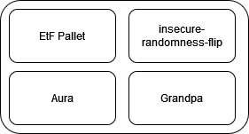
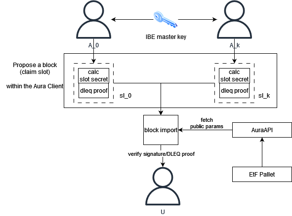
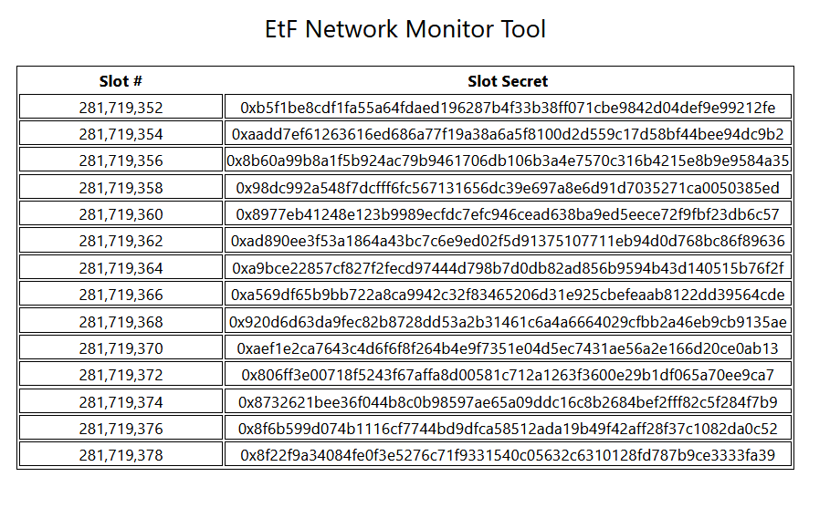

EtF Network Overview
This is an overview of the ETF Network’s consensus mechanism.
- substrate based blockchain
- consensus based on aura, introduces IBE secrets and DLEQ proofs to block headers
- use a pallet to manage and update public parameters for the identity based encryption and dleq proofs
Pallets
The network requires a pallet, the etf-pallet, to function. The etf-pallet stores public parameters that are required to enable identity based encryption. These values are calculated offchain and encoded in the genesis block.

ETF Pallet
The ETF pallet stores public parameters needed for the IBE scheme. The values are set on genesis and only changeable by the root user (via the Sudo pallet) when they call the update_ibe_params extrinsic. The extrinsic uses Arkworks to decode the input to ensure that the provided data is a valid element of G2, and if so then it encodes it in storage. In the future, we intend to make this a more democratic process.
Consensus and Encryption to the Future
Here we present a high-level overview of how the consensus mechanism works. Essentially, the goal of our consensus mechanism is to construct a table of IBE secrets and public keys which grows at a constant rate and whose authenticity and correctness is ensured by consensus. For a deep dive into the math, jump to the math.
There are four major phases:
- Setup: IBE Setup, slot identification scheme, and blockchain genesis
- Authority Selection: Round-robin authority selection (i.e. aura)
- Claim a slot: Block authors calculate an IBE secret for the identity and corresponding DLEQ proof, and include it in the new block header
- Block verification: Block importers verify the DLEQ proof when checking the block’s validity
The initial version of the network uses a fork of Aura, a round-robin proof of authority consensus mechanism. Each authority is an IBE master key custodian, which is created in the IBE setup phase (more on this here). This requires trust in each authority, a requirement we will relax in the future.
When a slot author proposes a block, they first use the master secret to calculate a slot secret (the IBE extract algorithm), which they add to the block header. This slot secret is intended to be leaked and made public. In order to ensure the correctness of the secret to be leaked, block producers include a DLEQ proof that shows the slot secret was correctly calculated. Along with this, they also sign the block as usual.
Block importers simply verify the DLEQ proof. If the DLEQ proof is not valid, the block is rejected.

Whenever a block is authored in a slot, the slot secret can then be extracted and used. Essentially, the blockchain is building a table of IBE secrets and public keys which grows at a constant rate and whose authenticity and correctness is ensured by consensus.

Slot Identity
In our proof-of-authority based network, there is a known set of authorities, say \(A = {A_1, …, A_n}\), from which block authors are sequentially selected (round-robin). That is, for a slot \(sl_k\), the authority to author a block in the slot is given by \(A_{sl_k} = A[sl_k \mod |A|] \). A slot’s identity is given by \(ID_{sl_k} = sl_k\). We simply use the slot number as the slot identity. For example, a slot id could look like 0x231922012, where 231,922,012 is the slot number. We preserve the authoritiy’s standard block seal within the block header in order to keep slot identities simple.
To get a public key from the slot id, we use a hash-to-G1 function, which gives us public keys in G1 (the elliptic curve group we’re working with). That is, each slot implicitly has an identity, and by evaluating the id under the hash-to-G1 function, a public key in G1.
Claiming a Slot
When a block author claims a slot, they perform the extract algorithm of the IBE scheme, where they use their slot public key along with the master secret to calculate the slot secret (e.g. d = sQ where s is the master secret and is the public key). In order to do this, we introduce new functionality to the existing AuraAPI which allows slot authors to fetch the IBE public parameters, which are stored in the etf pallet, as well as read the master secret from local storage.
After calculating the slot secret, the slot author is tasked with preparing a DLEQ proof that the slot secret was calculated from the master secret. We accomplish this by implementing a trait which enables DLEQ proof and verification, using Arkworks. It allows the prover to demonstrate that, given some xG and xH, that both were calculated from x without revealing the value. In our scheme, one of the values is the slot secret, d = sQ, and the other is the master secret multiplied by the public param stored in the etf pallet. The DLEQ proof is then encoded within the block header when it is proposed by the author. That is, each block header contains a PreDigest which contains the slot id, the slot secret, and the DLEQ proof like so:
#![allow(unused)] fn main() { PreDigest: { slot: 'u64', secret: '[u8;48]', proof: '([u8;224])' } }
Importing and Verifying Blocks
When a block importer receives a new block, they first check that the slot is correct. If correct, then they recover the DLEQ proof from the block header and verify it along with the block seal (which is still a normal Schnorr signature). If the DLEQ proof is valid, then we know the slot secret is valid as well. If the proof is invalid, then the secret is incorrect and the block is rejected.
Consensus Error Types
Block producers and importers are given two new consensus error types here. For block producers, the InvalidIBESecret is called when the aura client cannot fetch a master IBE secret from local storage. For block importers, InvalidDLEQProof is triggered when a DLEQ proof cannot be verified. This is very similar in functionality to the BadSignature error type.